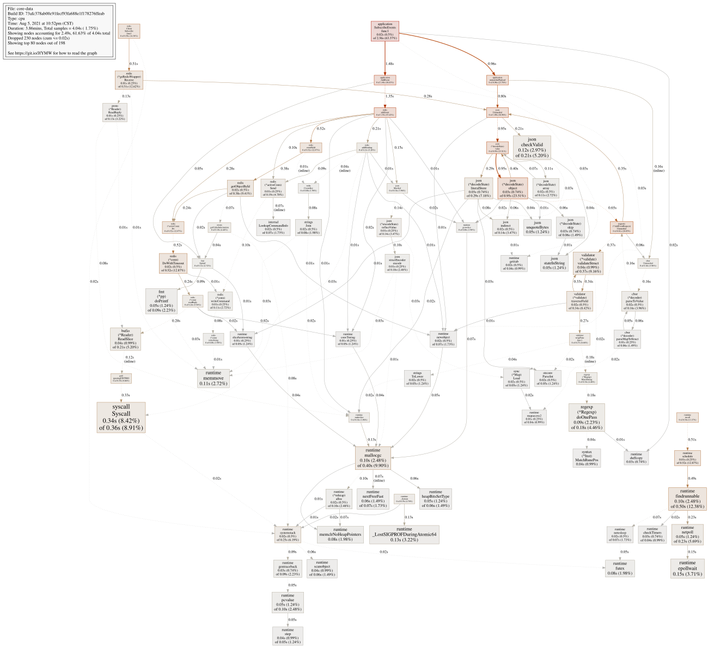
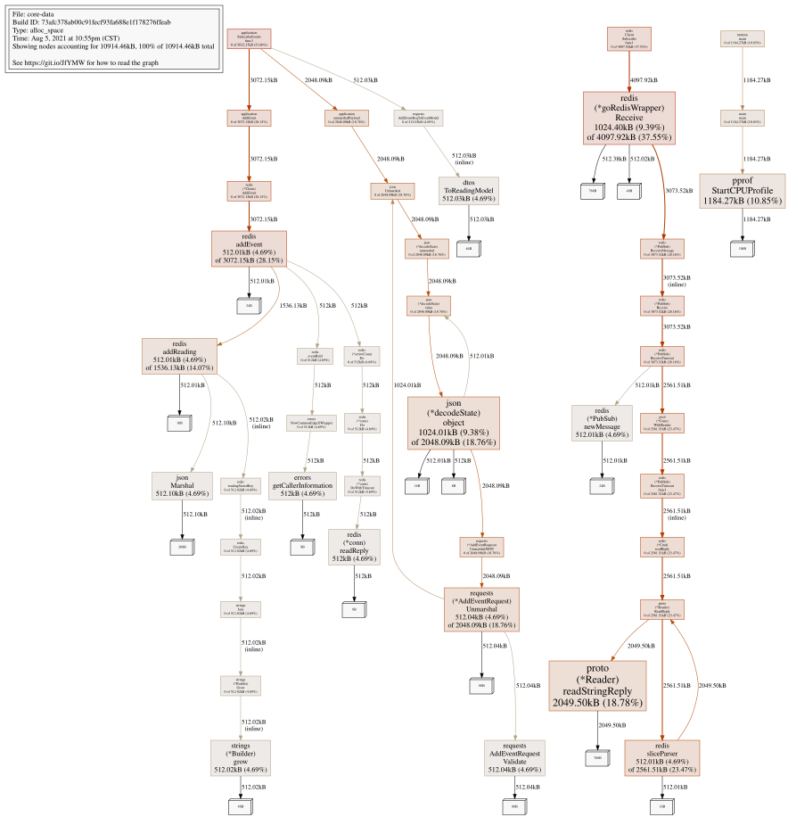
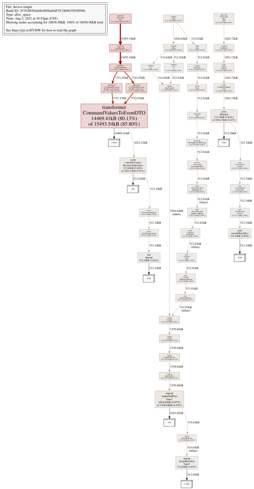

EdgeX 性能分析
写在前面¶
EdgeX 是 Linux 软件基金会旗下的一个开源的，应用在边缘计算设备上的，针对 IoT 设备的软件系统。它使用 Go 语言实现，基于微服务框架。
这还是个很早期的开源软件系统，截止写稿当日，其最新版本是 V2.0.0。早期版本的很多服务还是基于 Java 实现的，最近才全部改为 Go 语言实现。这给了我们一点希望：是不是可以应用在资源受限的 IoT 网关上。
性能评估方案¶
我们使用 Raspbery Pi 3B+ 来进行评估，它使用 BCM2837B0，1.4GHz 64-bit 四核，1GB DDR2 内存。其实这个性能不低，但暂时手上只有这个用来评估的硬件，权作参考。
我们设计的方案是，在 Raspbery Pi 上运行 EdgeX 的基础服务，然后再运行一个官方的 Demo Device Service，创建 10 个设备，其中 5 个设备每秒通过 AutoEvent 上报一次数据，另外 5 个设备每 3 秒通过 AutoEvent 上报一次数据。在这种情况下，我们使用 Go pprof 工具，来检查 CPU 以及内存使用情况。
快速了解 pprof 工具，可参阅 Go 官方博客上的一篇文章 Profiling Go Programs。
测试结论¶
结论一：EdgeX 核心服务中，core-data 的 CPU 和内存占用相对较多，而其他的核心服务，如 core-metadata, core-command 则资源消耗非常少。
这也非常好理解，core-metadata 只有在启动的时候以及搜索到新设备的时候，才会运行相关业务，在业务持续运行中，根本就没有需要运行的任务。由于我们测试过程中，没有对设备进行命令控制，而是由设备主动上报事件，故 core-command 也几乎没有资源消耗。
结论二：我们的 Demo Device Service 资源消耗相对较多。
特别地，如果使用官方的 edgex-sdk-go 中的 simple device，资源占用非常多。而如果去掉 device-simple 中的 Image 属性上报，则资源占用少很多。
这里的原因是，每次上报 Image 属性时，需要解码一个 jpeg 图片，然后再编码，再把二进制数据发送给 core-data 服务。这个过程会消耗非常多的 CPU 以及内存资源。
由于我们的评估，暂不涉及多媒体数据，故去掉 Image 属性的上报，只上报文本以及数值型数据，这样更符合普通的 IoT 设备场景。
最终结论：EdgeX 运行在 1GHz, 512MB 内存的 ARM 设备上，机会还是比较大的。但一个不确定因素是，我们当前的测试，没有开启 EdgeX 的安全机制。开启安全机制后，对资源的消耗肯定会更多。
详细数据¶
我们拿 core-data 以及 device-simple 两个服务，来分析 CPU 以及内存占用。先来看 core-data 服务。
$ go tool pprof core-data cpu.prof
File: core-data
Build ID: 73afc378ab00c91fecf93fa688e1f178276ffeab
Type: cpu
Time: Aug 5, 2021 at 10:52pm (CST)
Duration: 3.86mins, Total samples = 4.04s ( 1.75%)
Entering interactive mode (type "help" for commands, "o" for options)
(pprof) top
Showing nodes accounting for 1300ms, 32.18% of 4040ms total
Dropped 230 nodes (cum <= 20.20ms)
Showing top 10 nodes out of 198
flat flat% sum% cum cum%
340ms 8.42% 8.42% 360ms 8.91% syscall.Syscall
150ms 3.71% 12.13% 150ms 3.71% runtime.epollwait
130ms 3.22% 15.35% 130ms 3.22% runtime._LostSIGPROFDuringAtomic64
120ms 2.97% 18.32% 210ms 5.20% encoding/json.checkValid
110ms 2.72% 21.04% 110ms 2.72% runtime.memmove
100ms 2.48% 23.51% 500ms 12.38% runtime.findrunnable
100ms 2.48% 25.99% 400ms 9.90% runtime.mallocgc
90ms 2.23% 28.22% 180ms 4.46% regexp.(*Regexp).doOnePass
80ms 1.98% 30.20% 80ms 1.98% runtime.futex
80ms 1.98% 32.18% 80ms 1.98% runtime.memclrNoHeapPointers
(pprof) svg
Generating report in profile002.svg
Duration: 3.86mins, Total samples = 4.04s ( 1.75%) 这个信息基本可以看到，对 CPU 资源的占用不高。系统总共运行了 3.86 分钟，在采样周期内，core-data 只被运行了 4.04 秒，占系统 CPU 单核资源的 1.75%。
通过生成的 CPU 运行情况 svg 图片，可以看到，CPU 主要消耗处理设备上报的数据上。其中，一是 AddEvent 来通过 Redis 读取设备数据。二
是 unmarshalPayload 对 JSON 进行解析。这些分析结论，符合我们设计的测试场景。

接下来，我们来看内存资源消耗情况。
$ go tool pprof core-data mem.prof
File: core-data
Build ID: 73afc378ab00c91fecf93fa688e1f178276ffeab
Type: inuse_space
Time: Aug 5, 2021 at 10:55pm (CST)
Entering interactive mode (type "help" for commands, "o" for options)
(pprof) sample_index=alloc_space
(pprof) top
Showing nodes accounting for 8354.43kB, 76.54% of 10914.46kB total
Showing top 10 nodes out of 43
flat flat% sum% cum cum%
2049.50kB 18.78% 18.78% 2049.50kB 18.78% github.com/go-redis/redis/v7/internal/proto.(*Reader).readStringReply
1184.27kB 10.85% 29.63% 1184.27kB 10.85% runtime/pprof.StartCPUProfile
1024.40kB 9.39% 39.01% 4097.92kB 37.55% github.com/edgexfoundry/go-mod-messaging/v2/internal/pkg/redis.(*goRedisWrapper).Receive
1024.01kB 9.38% 48.40% 2048.09kB 18.76% encoding/json.(*decodeState).object
512.10kB 4.69% 53.09% 512.10kB 4.69% encoding/json.Marshal
512.04kB 4.69% 57.78% 2048.09kB 18.76% github.com/edgexfoundry/go-mod-core-contracts/v2/dtos/requests.(*AddEventRequest).Unmarshal
512.04kB 4.69% 62.47% 512.04kB 4.69% github.com/edgexfoundry/go-mod-core-contracts/v2/dtos/requests.AddEventRequest.Validate
512.03kB 4.69% 67.16% 512.03kB 4.69% github.com/edgexfoundry/go-mod-core-contracts/v2/dtos.ToReadingModel
512.02kB 4.69% 71.85% 512.02kB 4.69% strings.(*Builder).grow (inline)
512.01kB 4.69% 76.54% 3072.15kB 28.15% github.com/edgexfoundry/edgex-go/internal/pkg/infrastructure/redis.addEvent
(pprof)
我们通过 sample_index=alloc_space 来查看内存累计分配情况。默认情况下，pprof 显示的是内存占用情况。两者的区别是，如果在程序运行过程中，分配完马上释放，则不计入内存使用 (inuse_space)，但会计入 alloc_space。作为内存资源，我们更关注峰值情况。
通过上述数据，可以看到 Showing nodes accounting for 8354.43kB, 76.54% of 10914.46kB total，在 3.86 分钟内，累计分配了 8MB 的堆内存。看起来，内存资源占用并不多。
按照我们设计的测试方案，每均每秒将近 7 次事件（5 + 5/3）上报，3.86 分钟内，总共上报了 3.86 * 60 * 7 = 1621.2 个事件。这样算下来，每个事件上报大概会分配内存 8354 / 1621 = 5KB。粗略换算，如果每秒有 100 个事件上报，大概占用 500KB 的内存。从这个数据来看，内存资源消耗还是很少的。
通过生成堆内存消耗情况的 svg 图片，可以清晰地看到：
SubscribeEvents累计使用 5MB 的资源。这里面主要包括通过 Redis 客户端读取数据，对数据进行 JSON 解析，以及数据类型转换。redisClientSubscribe累计使用了近 4MB 的资源。这里主要是 Redis 客户端订阅数据及处理数据过程中的内存资源消耗。main是系统服务初始化，累计使用了近 1MB 的资源。
总体来看，符合我们的分析场景。

接着，我们看 device-simple 设备服务的 CPU 占用情况：
$ go tool pprof device-simple cpu.prof
File: device-simple
Build ID: 25762f65b4ab8c689fad4df7f11869635b5f094b
Type: cpu
Time: Aug 5, 2021 at 10:52pm (CST)
Duration: 3.86mins, Total samples = 3.04s ( 1.31%)
Entering interactive mode (type "help" for commands, "o" for options)
(pprof) top
Showing nodes accounting for 1220ms, 40.13% of 3040ms total
Dropped 169 nodes (cum <= 15.20ms)
Showing top 10 nodes out of 237
flat flat% sum% cum cum%
210ms 6.91% 6.91% 210ms 6.91% runtime._LostSIGPROFDuringAtomic64
160ms 5.26% 12.17% 160ms 5.26% runtime.epollwait
150ms 4.93% 17.11% 800ms 26.32% runtime.findrunnable
150ms 4.93% 22.04% 150ms 4.93% syscall.Syscall
110ms 3.62% 25.66% 110ms 3.62% runtime._ExternalCode
100ms 3.29% 28.95% 110ms 3.62% kernelcas
100ms 3.29% 32.24% 110ms 3.62% runtime.heapBitsSetType
90ms 2.96% 35.20% 90ms 2.96% runtime.futex
80ms 2.63% 37.83% 300ms 9.87% runtime.netpoll
70ms 2.30% 40.13% 70ms 2.30% runtime.memmove
(pprof)
从数据 Duration: 3.86mins, Total samples = 3.04s ( 1.31%) 来看，比 core-data 少一些。总体 CPU 占用不多。当然，这里的测试，我们去掉了 Image 属性的上报，并没有进行官方示例程序里的图片编码解码。
内存占用情况如下：
$ go tool pprof device-simple mem.prof
File: device-simple
Build ID: 25762f65b4ab8c689fad4df7f11869635b5f094b
Type: inuse_space
Time: Aug 5, 2021 at 10:55pm (CST)
No samples were found with the default sample value type.
Try "sample_index" command to analyze different sample values.
Entering interactive mode (type "help" for commands, "o" for options)
(pprof) sample_index=alloc_space
(pprof) top
Showing nodes accounting for 18056.90kB, 100% of 18056.90kB total
Showing top 10 nodes out of 43
flat flat% sum% cum cum%
14469.41kB 80.13% 80.13% 15493.54kB 85.80% github.com/edgexfoundry/device-sdk-go/v2/internal/transformer.CommandValuesToEventDTO
1024.02kB 5.67% 85.80% 1538.64kB 8.52% regexp.makeOnePass.func1
514.63kB 2.85% 88.65% 514.63kB 2.85% regexp.mergeRuneSets.func2 (inline)
512.38kB 2.84% 91.49% 1024.72kB 5.67% encoding/json.Marshal
512.34kB 2.84% 94.33% 512.34kB 2.84% encoding/json.encodeByteSlice
512.10kB 2.84% 97.16% 512.10kB 2.84% fmt.Sprintf
512.02kB 2.84% 100% 1024.12kB 5.67% github.com/edgexfoundry/device-sdk-go/v2/internal/cache.(*profileCache).ResourceOperation
0 0% 100% 512.34kB 2.84% encoding/json.(*encodeState).marshal
0 0% 100% 512.34kB 2.84% encoding/json.(*encodeState).reflectValue
0 0% 100% 512.34kB 2.84% encoding/json.structEncoder.encode
(pprof)
Showing nodes accounting for 18056.90kB, 100% of 18056.90kB total 从这个信息来看，总共消耗 18MB 的堆内存。比 core-data 要多出近 10MB。
按照我们设计的测试方案，每均每秒将近 7 次事件（5 + 5/3）上报，3.86 分钟内，总共上报了 3.86 * 60 * 7 = 1621.2 个事件。这样算下来，每个事件上报大概会分配内存 18056 / 1621 = 11KB。粗略换算，如果每秒有 100 个事件上报，大概占用 1MB 的内存。从这个数据来看，内存资源消耗还是很少的。

从导出的 svg 图片来看，通过 autoevent 读取设备设备属性时，累计分析了近 15MB 的内存，其中大部分都是在 CommandValuesToEventDTO 函数上分配的。且分配出来的内存，有将近 14MB 通过 Redis 写入数据库。
进一步计算，每个事件写入 redis 数据库，大概需要消耗 15000 / 1621 = 9KB 的内存。
（完）